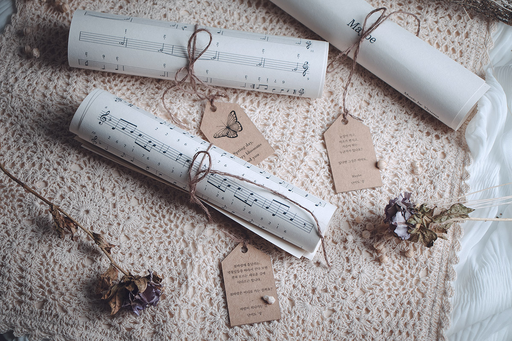

따사로운 봄날, 나만의 작은 음악회
“칼림바 연주 키트”
All Product
칼림바
악보 3장
조율 해머
극세사 융
마호가니로 제작한 칼림바는
울림이 뛰어나고 음색이 따뜻합니다.
내구성이 좋고 향균 효과가 있어
어린아이들도 안심하고 사용할 수 있습니다.
선명하게 각인 된 음표 음각과
블루톤의 색감, 돌고래 일러스트는
청아한 소리를 더욱 돋보이게 합니다.
Theme “Spring Breeze”
Theme “Pounding Heart”
Theme “Cherry Blossom”

밖은 이미 완연한 봄이지만, 최근 코로나 사태로 집안에서 생활하는 시간이 많습니다.
좋은 음악과 함께한다면 항상 똑같게 느껴지던 장소도 새롭게 다가올 수 있습니다.
배우기 쉽고 저렴한 칼림바로 일상 속 작은 봄을 만끽해 보는 건 어떨까요?